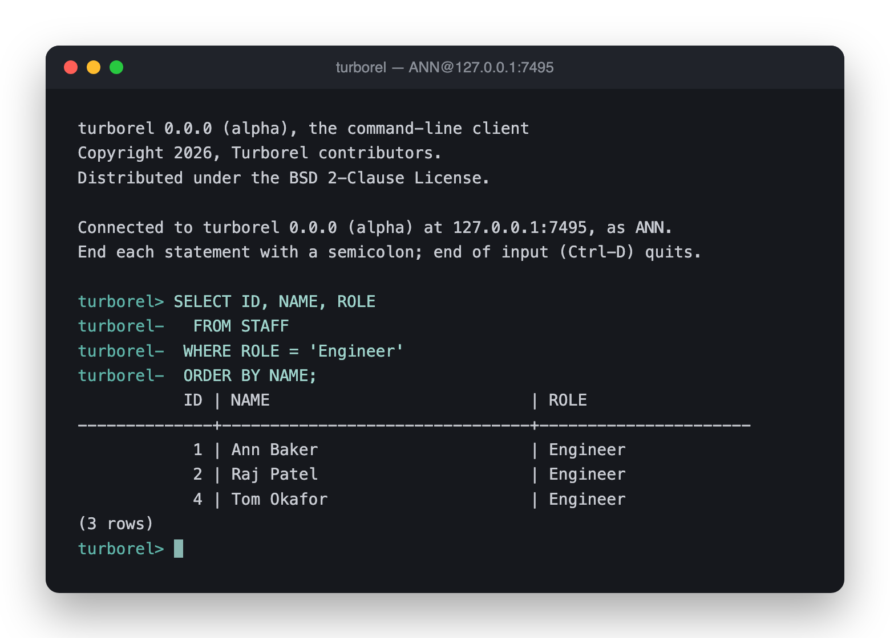

turborel (TUR-boh-rel) is a relational database system written in Rust. It is not a fork of an existing database, and built to be extended throughout from storage engines, index methods, functions, optimizer rules, and more. It is licensed under the BSD 2-Clause License.
The project is still in its early stages and under very active development. Bug reports, feature requests, and feedback are all welcome. While the core architecture takes shape, we're not accepting pull requests yet, but that will change as the project matures.
